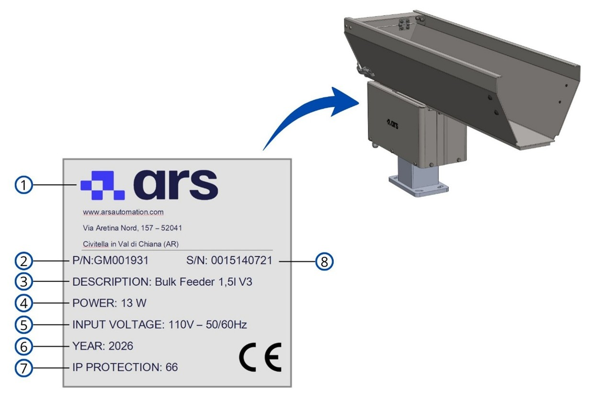
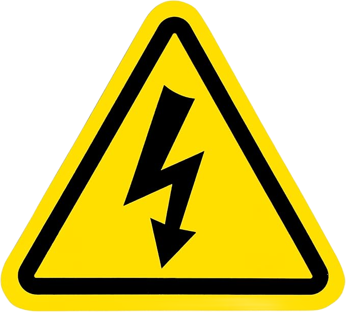

Informazioni Preliminari Generali#
Important
Prima di installare, utilizzare o effettuare manutenzione sulla macchina, leggere attentamente l’intero manuale e tutta la documentazione allegata.
Il mancato rispetto delle istruzioni riportate può causare:
danni alla macchina;
perdita delle condizioni di sicurezza;
rischi per operatori e manutentori;
decadenza della garanzia.
Identificazione#
Targa di Identificazione#
La macchina è dotata di una targa di identificazione posizionata sulla base vibrante. Gli estremi riportati sulla targhetta devono essere citati in ogni comunicazione con ARS S.r.l.

| Pos. | Elemento sulla targa |
|---|---|
| 1 | Logo Costruttore |
| 2 | N° parte |
| 3 | Modello Macchina |
| 4 | Potenza |
| 5 | Tensione di Alimentazione |
| 6 | Anno di Costruzione |
| 7 | Grado di protezione IP |
| 8 | N° matricola |
Warning
ATTENZIONE — Targa identificativa CE
È assolutamente vietato:
asportare la targa identificativa CE;
sostituirla con targhe non autorizzate.
Se la targa venisse danneggiata o rimossa per cause accidentali, il cliente è obbligato a informare immediatamente il Costruttore.
Dichiarazione di Conformità CE (Copia)#
We: ARS S.r.l. – Via Aretina Nord, 157 – 52041 Pieve al Toppo (AR), Italia
Declare under our exclusive responsibility that the product:
BULK FEEDER 1,5 lt / 3 lt / 5 lt / 10 lt / 20 lt / 40 lt
is compliant with the following standards and regulations:
- DLGS 17/2010
- 2006/42/EC – "Partly completed machinery"
The machinery described above is intended to be incorporated into other machinery and must not be put into service until the relevant machinery into which it is to be incorporated has been declared in conformity with the essential health and safety requirements of Directive 2006/42/EC.
Direttive di Riferimento#
La macchina fornita da ARS S.r.l. non rientra nelle categorie elencate nell’Allegato IV della Direttiva Macchine; si applica pertanto la procedura di valutazione della conformità con controllo interno sulla fabbricazione (Allegato VIII).
Il fascicolo tecnico di costruzione è redatto secondo l’Allegato VII della Direttiva 2006/42/CE ed è disponibile agli organi di vigilanza su richiesta motivata.
La macchina è immessa sul mercato corredata di:
Marcatura CE
Dichiarazione CE di Conformità
Manuale di istruzioni e avvertenze (punto 1.7.4 della Direttiva Macchine 2006/42/CE)
| Direttiva | Descrizione / Ambito |
|---|---|
| 2006/42/CE | Direttiva Macchine |
| 2014/30/UE | Direttiva per la Compatibilità Elettromagnetica |
Destinatari, Fornitura e Conservazione#
Il manuale è destinato agli operatori incaricati di utilizzare e gestire la macchina in tutte le fasi della sua vita tecnica. Il manuale, unitamente al certificato CE, è parte integrante della macchina e deve accompagnarla in ogni spostamento o rivendita.
Aspetto |
Prescrizione |
|---|---|
Integrità |
Conservare integro. In caso di smarrimento, richiedere copia immediata al Costruttore. |
Passaggi di proprietà |
Deve seguire la macchina fino alla demolizione (spostamenti, vendita, noleggio, affitto). |
Formato |
Fornito in formato elettronico, con allegati (schemi elettrici, manuali sub-fornitori). |
Allegati |
I manuali allegati sono parte costitutiva; si applicano le medesime prescrizioni. |
Lingua originale |
Italiano. In caso di incongruenze con le traduzioni, fa fede il testo originale. |
Aggiornamenti |
A cura del Costruttore. L’utilizzatore garantisce che solo le versioni aggiornate siano in uso. |
Attention
La Ditta Costruttrice declina ogni responsabilità per uso improprio della macchina e/o per danni causati da operazioni non contemplate nella documentazione tecnica.
Profili degli Operatori e Qualifiche#
Tutte le qualifiche sopra rientrano obbligatoriamente nella categoria di “Persona Addestrata”:
Simbologia di Sicurezza#


Glossario Tecnico#
| Termine | Definizione Tecnica |
|---|---|
| Accessori di sollevamento | Componenti non collegati alle macchine che consentono la presa del carico, disposti tra la macchina e il carico (incluse imbracature e loro componenti). |
| Avaria | Guasto che impedisce il normale funzionamento di un macchinario o di un impianto. |
| Catene, funi o cinghie | Elementi progettati per il sollevamento come parte integrante di macchine o accessori di sollevamento. |
| Danno | Qualunque conseguenza negativa derivante dal verificarsi di un evento pericoloso. |
| D.P.I. | Dispositivo di Protezione Individuale: prodotti atti a salvaguardare la salute e la sicurezza dei lavoratori che li indossano. |
| Macchina | Insieme equipaggiato di un sistema di azionamento composto di parti (di cui almeno una mobile), collegate per un'applicazione determinata. |
| Malfunzionamento | Funzionamento difettoso o inadeguato di una macchina o di un suo elemento. |
| Pericolo | Potenziale sorgente di danno che, se non evitato, comporta un rischio per la sicurezza e la salute. |
| Protezione | Difesa contro ciò che può causare danno. Può essere Attiva (azionata dall'operatore) o Passiva (interviene senza comando umano). |
| Riparo | Barriera fisica, progettata come parte strutturale della macchina, per fornire protezione. |
| Rischio | Combinazione della probabilità e della gravità di una lesione o di un danno in una situazione pericolosa. |
| Rischio residuo | Rischio che permane dopo l'adozione delle misure di protezione e prevenzione in fase di progetto. |
| Uso previsto | Uso della macchina in conformità alle informazioni fornite nelle istruzioni d'uso. |
| Uso scorretto prevedibile | Uso non previsto dal progettista, derivante da un comportamento umano facilmente prevedibile. |
Dispositivi di Protezione Individuale (D.P.I.) Obbligatori#
Nelle fasi di prossimità alla macchina (montaggio, manutenzione, regolazione) è obbligatorio impiegare i seguenti DPI:


Warning
ABBIGLIAMENTO DI SICUREZZA
L’abbigliamento del personale deve essere conforme ai requisiti essenziali previsti dal Regolamento UE 2016/425 e alle leggi vigenti nel Paese di installazione. Il mancato rispetto può compromettere la sicurezza dell’operatore e delle persone esposte.
Mappatura delle Aree di Sicurezza#
Warning
ACCESSO A ZONE PERICOLOSE
I rischi nelle zone della macchina sono protetti tramite ripari fisici (carter, portelli) e dispositivi elettrici interbloccati (sensori, microinterruttori).
Quando il sistema è attivo è severamente vietato:
scavalcare le protezioni;
bypassare i dispositivi di sicurezza;
intervenire all’interno delle aree protette.
La rimozione o l’elusione dei sistemi di sicurezza può causare gravi lesioni alle persone e danni alla macchina.
Condizioni e Limiti della Garanzia#
Le clausole complete sono stabilite nel contratto di vendita, le cui condizioni hanno sempre la priorità rispetto a questo manuale.
- Apertura imballi eseguita con mezzi idonei senza danni ai sistemi.
- Installazione e avviamento eseguiti alla presenza di tecnici abilitati.
- Utilizzo entro i limiti nominali dichiarati nel contratto.
- Manutenzione nei tempi prestabiliti con ricambi originali ARS S.r.l. affidati a personale qualificato.
- Mancato rispetto delle norme di sicurezza o delle istruzioni.
- Installazione o impiego in ambienti non idonei.
- Rimozione o manomissione di dispositivi di controllo e sicurezza.
- Rimozione o alterazione della targa CE o dei pittogrammi.
- Modifiche non autorizzate al software (PLC, logiche, password).
- Uso improprio o affidamento a personale non autorizzato.
- Modifiche meccaniche/elettriche/pneumatiche senza autorizzazione scritta del Costruttore.
- Anomalie nell'erogazione dell'energia di alimentazione.
- Mancata attuazione del piano di manutenzione programmata.
- Smaltimento finale in violazione delle norme ambientali vigenti.
Sicurezze#
Misurazioni eseguite secondo UNI EN 11200 e UNI EN ISO 3746. L'esposizione al rumore durante il funzionamento è pari a 90 dB. Il livello effettivo in sito può variare in funzione del tipo di installazione, delle macchine adiacenti e delle caratteristiche dell'ambiente.
Le vibrazioni prodotte dalla macchina in normali condizioni di esercizio non sono pericolose per la salute degli operatori. Una vibrazione eccessiva è sintomo di guasto meccanico e deve essere segnalata ed eliminata immediatamente.
La macchina è conforme alla Direttiva EMC. I valori di emissione rientrano nei limiti normativi grazie all'impiego di componenti certificati, collegamenti idonei e filtri dove necessario. Interventi manutentivi non conformi o sostituzioni errate di componenti possono compromettere tale conformità.
Attention
OBBLIGO — È obbligatorio utilizzare i dispositivi di protezione individuale durante il funzionamento della macchina.
Rischi Residui#
La progettazione della macchina è stata eseguita per garantire i requisiti essenziali di sicurezza; tuttavia, permangono rischi residui nelle fasi di:
trasporto e installazione
funzionamento normale
regolazione e messa a punto
manutenzione e pulizia
smontaggio e smantellamento


Le procedure dettagliate sono descritte nel capitolo "Trasporto e installazione".
- Rispettare i pittogrammi di sicurezza relativi al rischio elettrico.
- Non effettuare manutenzione senza aver preventivamente sezionato l'alimentazione.
- Consultare i manuali delle attrezzature commerciali per raccomandazioni specifiche.
- Ispezionare periodicamente il circuito di protezione equipotenziale.
Attention
Non effettuare attività di manutenzione e pulizia senza aver prima de-energizzato tutte le fonti di energia presenti.
Attention
È assolutamente vietato rimuovere le protezioni di sicurezza o aprire i ripari fissi senza aver prima sezionato l’alimentazione elettrica e pneumatica della macchina.
L’utilizzatore è tenuto a:
analizzare i rischi di movimentazione e installazione all’interno della propria sede;
sensibilizzare e istruire il personale addetto alle operazioni;
applicare le segnalazioni visive di sicurezza nell’ambiente di lavoro.